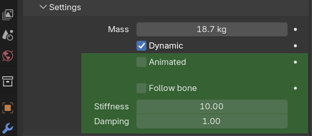

Ragdoll
Make
This operator adds ragdoll rig to selected armatures using a given preset. Presets are sorted by similarity to the active armature
Any armature rigged with this addon can be used as preset. Check Use as preset in object settings and it wil appear in the preset list
Select
Select anything and this operator will select the rest of the ragdoll rig
In operator settings you can change which parts of the rig should be selected

Mirror
Select what you want to mirror and choose direction
Remove
Select anything that has ragdoll rig and use this operator to remove it
Hitboxes
Hitbox shape can be adjusted from hitbox object settings in Object Mode or from bone settings in Pose Mode.
Tip
Hold Alt to change settings for all selected hitboxes at once
From mesh
Select bones in Pose Mode then go to Object Mode and select mesh objects and armature. This operator will make hitboxes for selected bones out of selected meshes.
Connect
Select bones in Pose Mode then go to Object Mode and select mesh objects and armature. This operator will assign every object to the nearest selected bone as a hitbox.
Set mass
Sets mass of selected items proportional to their volumes so their total mass adds up to a given value
Copy settings
This operator copies rigid body settings from active to selected
Constraints
Make
Select bones or hitboxes end this operator will create rigid body constraints between them.
Set limits
Run this operator and move character. Constraint limits will be set accordingly to the range of motion
Copy settings
This operator copies rigid body constraints settings from active to selected
Animation
Once you have a ragdoll,play animation.
You can make hitboxes softly follow bones . To do this use Follow bone property. To make them follow bones hard use Animated property

These properties can be animated
Tip
Use this addon to animate properties for multiple items at once
Tip
Change settings like this to enable color coding
Tip
If Blender crashes often during simulation try to save/reload before running it
Bake simulation to prevent recalculation on every playback
Bake
Use this operator to transfer animation from hitboxes to bones
Clear cache
Removes rigid body cache